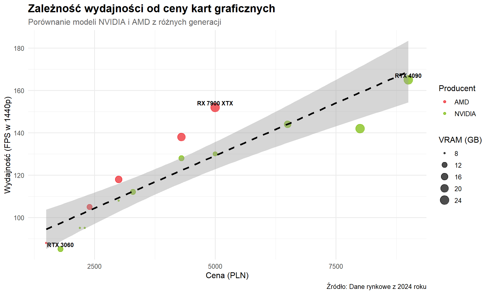
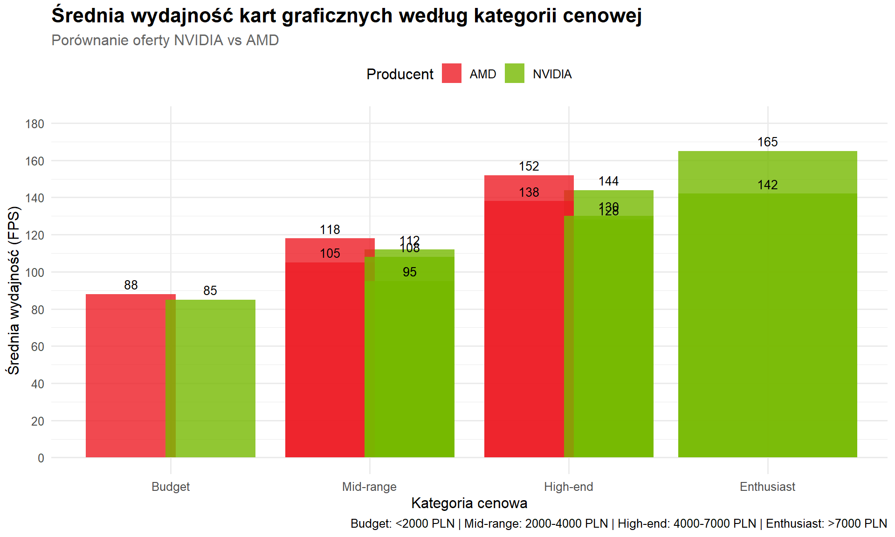
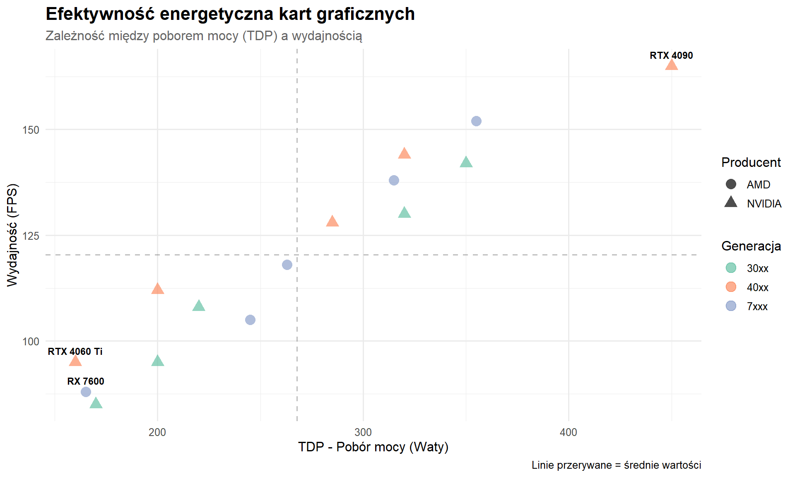

Last updated: 2026-01-04
Checks: 6 1
Knit directory: cvstronatworzenie/
This reproducible R Markdown analysis was created with workflowr (version 1.7.2). The Checks tab describes the reproducibility checks that were applied when the results were created. The Past versions tab lists the development history.
The R Markdown is untracked by Git. To know which version of the R
Markdown file created these results, you’ll want to first commit it to
the Git repo. If you’re still working on the analysis, you can ignore
this warning. When you’re finished, you can run
wflow_publish to commit the R Markdown file and build the
HTML.
Great job! The global environment was empty. Objects defined in the global environment can affect the analysis in your R Markdown file in unknown ways. For reproduciblity it’s best to always run the code in an empty environment.
The command set.seed(20260104) was run prior to running
the code in the R Markdown file. Setting a seed ensures that any results
that rely on randomness, e.g. subsampling or permutations, are
reproducible.
Great job! Recording the operating system, R version, and package versions is critical for reproducibility.
Nice! There were no cached chunks for this analysis, so you can be confident that you successfully produced the results during this run.
Great job! Using relative paths to the files within your workflowr project makes it easier to run your code on other machines.
Great! You are using Git for version control. Tracking code development and connecting the code version to the results is critical for reproducibility.
The results in this page were generated with repository version a375fbe. See the Past versions tab to see a history of the changes made to the R Markdown and HTML files.
Note that you need to be careful to ensure that all relevant files for
the analysis have been committed to Git prior to generating the results
(you can use wflow_publish or
wflow_git_commit). workflowr only checks the R Markdown
file, but you know if there are other scripts or data files that it
depends on. Below is the status of the Git repository when the results
were generated:
Ignored files:
Ignored: .RData
Ignored: .Rhistory
Ignored: .Rproj.user/
Untracked files:
Untracked: analysis/analiza-danych.Rmd
Untracked: data/gpu_dane.csv
Untracked: skrypt.R
Unstaged changes:
Modified: analysis/_site.yml
Modified: analysis/cv.Rmd
Deleted: data/Excel/gpu_dane.csv
Note that any generated files, e.g. HTML, png, CSS, etc., are not included in this status report because it is ok for generated content to have uncommitted changes.
There are no past versions. Publish this analysis with
wflow_publish() to start tracking its development.
W tej analizie przyjrzymy się rynkowi kart graficznych (GPU) z trzech głównych generacji: - NVIDIA GeForce RTX 30xx (2020-2021) - NVIDIA GeForce RTX 40xx (2022-2023) - AMD Radeon RX 7xxx (2022-2023)
Zbadamy zależności między: - Ceną a wydajnością - Pamięcią VRAM a ceną - Poborem mocy (TDP) a wydajnością - Porównamy oferty NVIDIA i AMD
# Załadowanie wymaganych pakietów
library(tidyverse) # dplyr + ggplot2 + inne
library(knitr) # do ładnych tabel# Wczytanie danych o kartach graficznych
gpu_data <- read.csv("data/gpu_dane.csv",
fileEncoding = "UTF-8",
stringsAsFactors = FALSE)
# Podgląd pierwszych wierszy
head(gpu_data) Model Producent Cena_PLN VRAM_GB TDP_W Wydajnosc_FPS Rok_premiery
1 RTX 4090 NVIDIA 8999 24 450 165 2022
2 RTX 4080 NVIDIA 6499 16 320 144 2022
3 RTX 4070 Ti NVIDIA 4299 12 285 128 2023
4 RTX 4070 NVIDIA 3299 12 200 112 2023
5 RTX 4060 Ti NVIDIA 2199 8 160 95 2023
6 RX 7900 XTX AMD 4999 24 355 152 2022
Generacja
1 40xx
2 40xx
3 40xx
4 40xx
5 40xx
6 7xxx# Podsumowanie danych
summary(gpu_data) Model Producent Cena_PLN VRAM_GB
Length:15 Length:15 Min. :1499 Min. : 8.00
Class :character Class :character 1st Qu.:2349 1st Qu.: 9.00
Mode :character Mode :character Median :3299 Median :12.00
Mean :4106 Mean :14.27
3rd Qu.:4999 3rd Qu.:18.00
Max. :8999 Max. :24.00
TDP_W Wydajnosc_FPS Rok_premiery Generacja
Min. :160.0 Min. : 85.0 Min. :2020 Length:15
1st Qu.:200.0 1st Qu.:100.0 1st Qu.:2020 Class :character
Median :263.0 Median :118.0 Median :2022 Mode :character
Mean :267.9 Mean :120.3 Mean :2022
3rd Qu.:320.0 3rd Qu.:140.0 3rd Qu.:2023
Max. :450.0 Max. :165.0 Max. :2023 # Struktura danych
str(gpu_data)'data.frame': 15 obs. of 8 variables:
$ Model : chr "RTX 4090" "RTX 4080" "RTX 4070 Ti" "RTX 4070" ...
$ Producent : chr "NVIDIA" "NVIDIA" "NVIDIA" "NVIDIA" ...
$ Cena_PLN : int 8999 6499 4299 3299 2199 4999 4299 2999 2399 1499 ...
$ VRAM_GB : int 24 16 12 12 8 24 20 16 12 8 ...
$ TDP_W : int 450 320 285 200 160 355 315 263 245 165 ...
$ Wydajnosc_FPS: int 165 144 128 112 95 152 138 118 105 88 ...
$ Rok_premiery : int 2022 2022 2023 2023 2023 2022 2022 2023 2023 2023 ...
$ Generacja : chr "40xx" "40xx" "40xx" "40xx" ...Zbiór zawiera: - 15 kart graficznych - 8 zmiennych (kolumn) - Dane o cenach, wydajności, specyfikacji technicznej
# Karty w przedziale 2000-5000 PLN (segment średni/wysoki)
gpu_mid_high <- gpu_data %>%
filter(Cena_PLN >= 2000 & Cena_PLN <= 5000) %>%
arrange(desc(Wydajnosc_FPS))
# Wyświetlenie wyników
kable(gpu_mid_high,
caption = "Karty graficzne w przedziale 2000-5000 PLN")| Model | Producent | Cena_PLN | VRAM_GB | TDP_W | Wydajnosc_FPS | Rok_premiery | Generacja |
|---|---|---|---|---|---|---|---|
| RX 7900 XTX | AMD | 4999 | 24 | 355 | 152 | 2022 | 7xxx |
| RX 7900 XT | AMD | 4299 | 20 | 315 | 138 | 2022 | 7xxx |
| RTX 3080 | NVIDIA | 4999 | 10 | 320 | 130 | 2020 | 30xx |
| RTX 4070 Ti | NVIDIA | 4299 | 12 | 285 | 128 | 2023 | 40xx |
| RX 7800 XT | AMD | 2999 | 16 | 263 | 118 | 2023 | 7xxx |
| RTX 4070 | NVIDIA | 3299 | 12 | 200 | 112 | 2023 | 40xx |
| RTX 3070 | NVIDIA | 2999 | 8 | 220 | 108 | 2020 | 30xx |
| RX 7700 XT | AMD | 2399 | 12 | 245 | 105 | 2023 | 7xxx |
| RTX 4060 Ti | NVIDIA | 2199 | 8 | 160 | 95 | 2023 | 40xx |
| RTX 3060 Ti | NVIDIA | 2299 | 8 | 200 | 95 | 2020 | 30xx |
Interpretacja:
W tym przedziale cenowym mamy 10 modeli. To najczęściej wybierany
segment przez graczy - oferuje dobrą wydajność bez astronomicznych
cen.
# Obliczenie wskaźników wydajności
gpu_data <- gpu_data %>%
mutate(
# Wydajność na złotówkę (FPS/PLN)
Wydajnosc_na_zlotowke = round(Wydajnosc_FPS / Cena_PLN, 4),
# Wydajność na Wat (FPS/W)
Wydajnosc_na_Wat = round(Wydajnosc_FPS / TDP_W, 2),
# Kategoria cenowa
Kategoria_cenowa = case_when(
Cena_PLN < 2000 ~ "Budget",
Cena_PLN >= 2000 & Cena_PLN < 4000 ~ "Mid-range",
Cena_PLN >= 4000 & Cena_PLN < 7000 ~ "High-end",
Cena_PLN >= 7000 ~ "Enthusiast"
),
# Cena za 1 GB VRAM
Cena_za_GB_VRAM = round(Cena_PLN / VRAM_GB, 0)
)
# Najlepsze karty pod względem wydajności na złotówkę
gpu_data %>%
select(Model, Producent, Cena_PLN, Wydajnosc_FPS, Wydajnosc_na_zlotowke) %>%
arrange(desc(Wydajnosc_na_zlotowke)) %>%
head(5) %>%
kable(caption = "TOP 5: Najlepsza wydajność na złotówkę")| Model | Producent | Cena_PLN | Wydajnosc_FPS | Wydajnosc_na_zlotowke |
|---|---|---|---|---|
| RX 7600 | AMD | 1499 | 88 | 0.0587 |
| RTX 3060 | NVIDIA | 1799 | 85 | 0.0472 |
| RX 7700 XT | AMD | 2399 | 105 | 0.0438 |
| RTX 4060 Ti | NVIDIA | 2199 | 95 | 0.0432 |
| RTX 3060 Ti | NVIDIA | 2299 | 95 | 0.0413 |
Interpretacja:
Model RX 7600 oferuje najlepszy stosunek wydajności do
ceny (0.0587 FPS/PLN).
# Porównanie producentów
porownanie_producentow <- gpu_data %>%
group_by(Producent) %>%
summarise(
Liczba_modeli = n(),
Srednia_cena = round(mean(Cena_PLN), 0),
Srednia_wydajnosc = round(mean(Wydajnosc_FPS), 1),
Sredni_TDP = round(mean(TDP_W), 0),
Srednie_VRAM = round(mean(VRAM_GB), 1),
Max_wydajnosc = max(Wydajnosc_FPS),
Min_cena = min(Cena_PLN)
) %>%
arrange(desc(Srednia_wydajnosc))
kable(porownanie_producentow,
caption = "Porównanie producentów GPU")| Producent | Liczba_modeli | Srednia_cena | Srednia_wydajnosc | Sredni_TDP | Srednie_VRAM | Max_wydajnosc | Min_cena |
|---|---|---|---|---|---|---|---|
| NVIDIA | 10 | 4539 | 120.4 | 268 | 13.4 | 165 | 1799 |
| AMD | 5 | 3239 | 120.2 | 269 | 16.0 | 152 | 1499 |
Interpretacja:
- NVIDIA ma średnio wyższą wydajność (120.4 FPS) -
AMD oferuje niższą średnią cenę (3239 PLN)
# Analiza według generacji
analiza_generacji <- gpu_data %>%
group_by(Generacja, Producent) %>%
summarise(
Liczba_modeli = n(),
Srednia_cena = round(mean(Cena_PLN), 0),
Srednia_wydajnosc = round(mean(Wydajnosc_FPS), 1),
.groups = "drop"
) %>%
arrange(Generacja, Producent)
kable(analiza_generacji,
caption = "Analiza według generacji i producenta")| Generacja | Producent | Liczba_modeli | Srednia_cena | Srednia_wydajnosc |
|---|---|---|---|---|
| 30xx | NVIDIA | 5 | 4019 | 112.0 |
| 40xx | NVIDIA | 5 | 5059 | 128.8 |
| 7xxx | AMD | 5 | 3239 | 120.2 |
ggplot(gpu_data, aes(x = Cena_PLN, y = Wydajnosc_FPS)) +
# Punkty z podziałem na producentów
geom_point(aes(color = Producent, size = VRAM_GB), alpha = 0.7) +
# Linia trendu
geom_smooth(method = "lm", se = TRUE, color = "black", linetype = "dashed") +
# Etykiety dla wybranych modeli
geom_text(data = gpu_data %>%
filter(Model %in% c("RTX 4090", "RX 7900 XTX", "RTX 3060")),
aes(label = Model),
vjust = -0.5, size = 3, fontface = "bold") +
# Tytuły i opisy
labs(
title = "Zależność wydajności od ceny kart graficznych",
subtitle = "Porównanie modeli NVIDIA i AMD z różnych generacji",
x = "Cena (PLN)",
y = "Wydajność (FPS w 1440p)",
color = "Producent",
size = "VRAM (GB)",
caption = "Źródło: Dane rynkowe z 2024 roku"
) +
# Motyw
theme_minimal(base_size = 12) +
theme(
plot.title = element_text(face = "bold", size = 16),
plot.subtitle = element_text(size = 12, color = "gray40"),
legend.position = "right"
) +
# Kolory dla producentów
scale_color_manual(values = c("NVIDIA" = "#76B900", "AMD" = "#ED1C24"))
Interpretacja wykresu:
# Uporządkowanie kategorii
gpu_data$Kategoria_cenowa <- factor(gpu_data$Kategoria_cenowa,
levels = c("Budget", "Mid-range",
"High-end", "Enthusiast"))
ggplot(gpu_data, aes(x = Kategoria_cenowa, y = Wydajnosc_FPS, fill = Producent)) +
# Słupki grupowane
geom_col(position = position_dodge(width = 0.8), alpha = 0.8) +
# Wartości na słupkach
geom_text(aes(label = round(Wydajnosc_FPS, 0)),
position = position_dodge(width = 0.8),
vjust = -0.5, size = 3.5) +
# Tytuły i opisy
labs(
title = "Średnia wydajność kart graficznych według kategorii cenowej",
subtitle = "Porównanie oferty NVIDIA vs AMD",
x = "Kategoria cenowa",
y = "Średnia wydajność (FPS)",
fill = "Producent",
caption = "Budget: <2000 PLN | Mid-range: 2000-4000 PLN | High-end: 4000-7000 PLN | Enthusiast: >7000 PLN"
) +
# Motyw
theme_minimal(base_size = 12) +
theme(
plot.title = element_text(face = "bold", size = 16),
plot.subtitle = element_text(size = 12, color = "gray40"),
legend.position = "top",
axis.text.x = element_text(angle = 0, hjust = 0.5)
) +
# Kolory
scale_fill_manual(values = c("NVIDIA" = "#76B900", "AMD" = "#ED1C24")) +
# Skala Y
scale_y_continuous(breaks = seq(0, 180, 20), limits = c(0, 180))
Interpretacja wykresu:
ggplot(gpu_data, aes(x = TDP_W, y = Wydajnosc_FPS)) +
# Punkty
geom_point(aes(color = Generacja, shape = Producent), size = 4, alpha = 0.7) +
# Linie odniesienia
geom_hline(yintercept = mean(gpu_data$Wydajnosc_FPS),
linetype = "dashed", color = "gray50", alpha = 0.5) +
geom_vline(xintercept = mean(gpu_data$TDP_W),
linetype = "dashed", color = "gray50", alpha = 0.5) +
# Etykiety dla skrajnych modeli
geom_text(data = gpu_data %>%
filter(Model %in% c("RTX 4090", "RTX 4060 Ti", "RX 7600")),
aes(label = Model),
vjust = -1, size = 3, fontface = "bold") +
# Tytuły
labs(
title = "Efektywność energetyczna kart graficznych",
subtitle = "Zależność między poborem mocy (TDP) a wydajnością",
x = "TDP - Pobór mocy (Waty)",
y = "Wydajność (FPS)",
color = "Generacja",
shape = "Producent",
caption = "Linie przerywane = średnie wartości"
) +
# Motyw
theme_minimal(base_size = 12) +
theme(
plot.title = element_text(face = "bold", size = 16),
plot.subtitle = element_text(size = 12, color = "gray40"),
legend.position = "right"
) +
# Kolory dla generacji
scale_color_brewer(palette = "Set2")
Interpretacja wykresu:
Ważne dla użytkowników: - Niższy TDP = niższe rachunki za prąd - Niższy TDP = mniejsze wymagania dla zasilacza - Niższy TDP = mniej hałasu (wentylatory pracują wolniej)
# Najlepsza wydajność na złotówkę
best_value <- gpu_data %>%
arrange(desc(Wydajnosc_na_zlotowke)) %>%
slice(1)
# Najefektywniejsza energetycznie
best_efficiency <- gpu_data %>%
arrange(desc(Wydajnosc_na_Wat)) %>%
slice(1)
# Najbardziej opłacalna w danej kategorii
best_midrange <- gpu_data %>%
filter(Kategoria_cenowa == "Mid-range") %>%
arrange(desc(Wydajnosc_na_zlotowke)) %>%
slice(1)| Profil użytkownika | Rekomendacja |
|---|---|
| Gracz budżetowy | RX 7600 / RTX 3060 |
| Gracz casualowy (1440p) | RTX 4070 / RX 7800 XT |
| Entuzjasta (4K gaming) | RTX 4080 / RX 7900 XTX |
| Bez kompromisów | RTX 4090 |
W tej analizie wykorzystano:
filter() - filtrowanie kart w określonym przedziale
cenowymmutate() - tworzenie nowych zmiennych (wskaźniki
wydajności)group_by() - grupowanie według producenta i
generacjisummarise() - obliczanie statystyk dla gruparrange() - sortowanie wynikówselect() - wybieranie kolumngeom_point() - wykres punktowy (scatter plot)geom_col() - wykres słupkowy (bar chart)geom_smooth() - linia trendugeom_text() - etykiety na wykresachkable() - ładne formatowanie tabelAnaliza została wykonana: 2026-01-04
Autor: Imie Nazwisko
sessionInfo()R version 4.5.1 (2025-06-13 ucrt)
Platform: x86_64-w64-mingw32/x64
Running under: Windows 10 x64 (build 19045)
Matrix products: default
LAPACK version 3.12.1
locale:
[1] LC_COLLATE=Polish_Poland.utf8 LC_CTYPE=Polish_Poland.utf8
[3] LC_MONETARY=Polish_Poland.utf8 LC_NUMERIC=C
[5] LC_TIME=Polish_Poland.utf8
time zone: Europe/Warsaw
tzcode source: internal
attached base packages:
[1] stats graphics grDevices utils datasets methods base
other attached packages:
[1] knitr_1.50 lubridate_1.9.4 forcats_1.0.1 stringr_1.5.2
[5] dplyr_1.1.4 purrr_1.1.0 readr_2.1.6 tidyr_1.3.1
[9] tibble_3.3.0 ggplot2_4.0.0 tidyverse_2.0.0 workflowr_1.7.2
loaded via a namespace (and not attached):
[1] sass_0.4.10 generics_0.1.4 lattice_0.22-7 stringi_1.8.7
[5] hms_1.1.4 digest_0.6.37 magrittr_2.0.4 timechange_0.3.0
[9] evaluate_1.0.5 grid_4.5.1 RColorBrewer_1.1-3 fastmap_1.2.0
[13] Matrix_1.7-3 rprojroot_2.1.1 jsonlite_2.0.0 processx_3.8.6
[17] whisker_0.4.1 ps_1.9.1 promises_1.3.3 mgcv_1.9-3
[21] httr_1.4.7 scales_1.4.0 jquerylib_0.1.4 cli_3.6.5
[25] rlang_1.1.6 splines_4.5.1 withr_3.0.2 cachem_1.1.0
[29] yaml_2.3.10 tools_4.5.1 tzdb_0.5.0 httpuv_1.6.16
[33] vctrs_0.6.5 R6_2.6.1 lifecycle_1.0.4 git2r_0.36.2
[37] fs_1.6.6 pkgconfig_2.0.3 callr_3.7.6 pillar_1.11.1
[41] bslib_0.9.0 later_1.4.4 gtable_0.3.6 glue_1.8.0
[45] Rcpp_1.1.0 xfun_0.53 tidyselect_1.2.1 rstudioapi_0.17.1
[49] farver_2.1.2 nlme_3.1-168 htmltools_0.5.8.1 labeling_0.4.3
[53] rmarkdown_2.30 compiler_4.5.1 getPass_0.2-4 S7_0.2.0